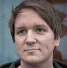

Monday June 17 Webmonday & WarmUp Party @ Die Wohngemeinschaft
What: Meetup, Concerts, Party
Date: June 17th
Time: 7 PM
Entrance: free
About Webmonday
Webmonday is an informal and completely community- driven event that aims to connect people who are shaping the future of the internet. Inspired by the culture of Silicon Valley, it started out in Cologne, Germany in late 2005 in an effort to help spread those sunny California vibes.
Web Monday is followed by an after-party with local bands and DJs!
After the talks we will have a live performance of Malte Griesgram
Talks
 Eva Mohr
Eva Mohr
Co-Founder Allthatiwant, an online platform for street style, fashion and urban cycling culture. I wrote a book and moved to NYC to eventually start a company with my best friend and to create the lifestyle we always dreamed of having: a headquarter in Honolulu and an office in our hometown cologne. And what exactly do we do? We started a company around the two things we're most passionate about: bicycles and fashion. You think we're crazy? Then you're a guy and haven't cycled in a dress before.
Tim Schneider
Tim is one of the founders of Railslove, interaction designer and web developer. Earlier this year he joined @fhkoeln's Web Science Master Program as a lecturer and is now working with students on all kinds of Privacy-related topics. He's talking about privacy injection – the pragmatic approach to web privacy.
If you think you have something to say just ping us on twitter or write an email.

Just a Guitar and a voice - that's all Malte von Griesgram needs to captivate his audience. The 29-year-old sings about bigger and smaller disasters of everyday life, often slightly melancholic, but never without a twinkle in his eye.. He took his first musical steps together with his band Griesgram. In 2010 he released his first solo album "Das kleine Schwarze". Since then he performed more than 30 solo concerts and is touring whenever it's possible...www.griesgram.com